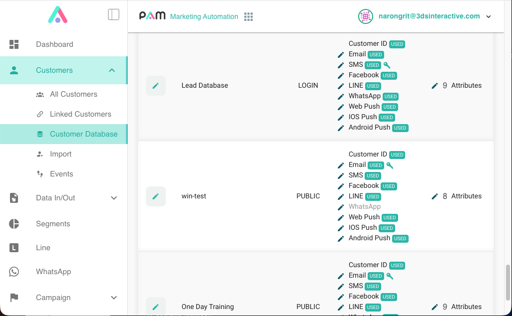

ทำความเข้าใจระบบฐานข้อมูล (Database) ใน PAM
ฐานข้อมูลใน PAM สามารถกำหนดคีย์ (Key) ที่ใช้ระบุตัวตนของลูกค้าได้ เพื่อให้ระบบทราบว่าข้อมูลหรือกิจกรรมที่ได้รับเป็นของลูกค้าคนใด
ดูการตั้งค่าฐานข้อมูลได้ที่ PAM Admin Console เมนู Customers > Customer Databases (ในภาพแสดงชื่อเมนูว่า Customer Database)

คีย์สำหรับระบุตัวตนลูกค้า
คีย์หลักที่ระบบรองรับมีดังนี้:
| คีย์ | ข้อมูลที่ใช้ระบุตัวตน |
|---|---|
sms |
เบอร์โทรศัพท์ |
email |
อีเมล |
customer |
รหัสลูกค้า |
นอกจากคีย์หลักแล้ว ยังสามารถกำหนด คีย์รอง เพื่อใช้ข้อมูลระบุตัวตนอื่นตามที่ตั้งค่าไว้ใน PAM ได้
แนวทางการเลือกคีย์
ทีม Data ควรกำหนดว่าจะใช้ข้อมูลใดเป็นคีย์ โดยพิจารณาว่าข้อมูลนั้นสามารถใช้อ้างอิงถึงลูกค้าคนเดียวกันได้ในทุกระบบที่มีอยู่ เพื่อให้แต่ละระบบเชื่อมโยงข้อมูลของลูกค้าได้ตรงกัน
ค่าที่ใช้เป็นคีย์ต้องไม่เปลี่ยนแปลงตลอดการใช้งาน จึงควรเลือกข้อมูลที่มีความคงที่ เช่น รหัสลูกค้าถาวร หากเลือกใช้เบอร์โทรศัพท์หรืออีเมล ต้องพิจารณาด้วยว่าลูกค้าอาจเปลี่ยนข้อมูลเหล่านี้ในภายหลังได้